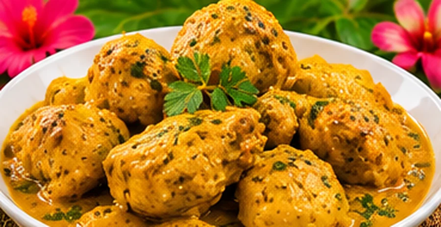
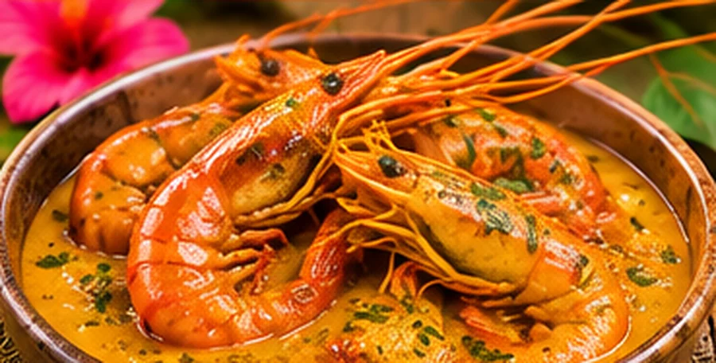
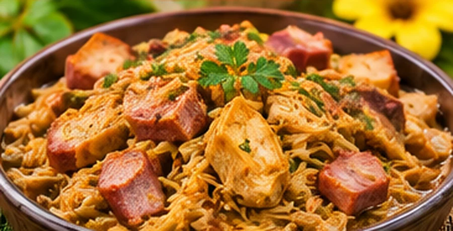
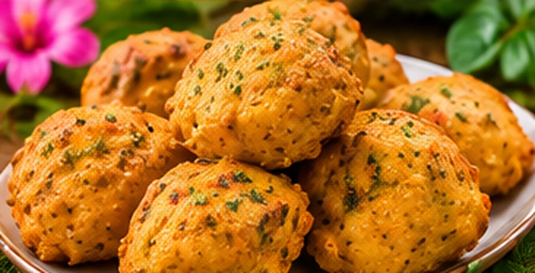
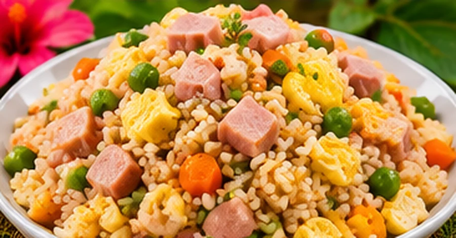
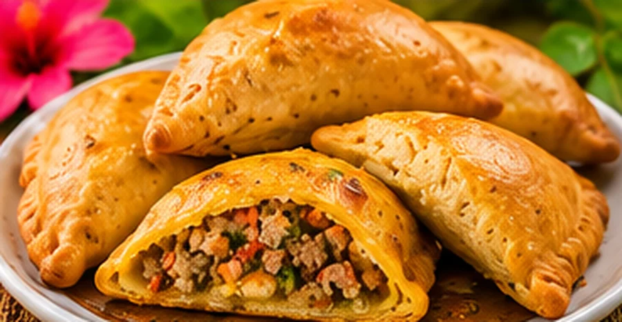
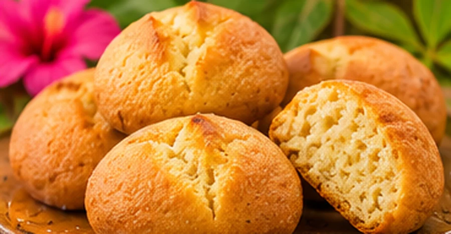
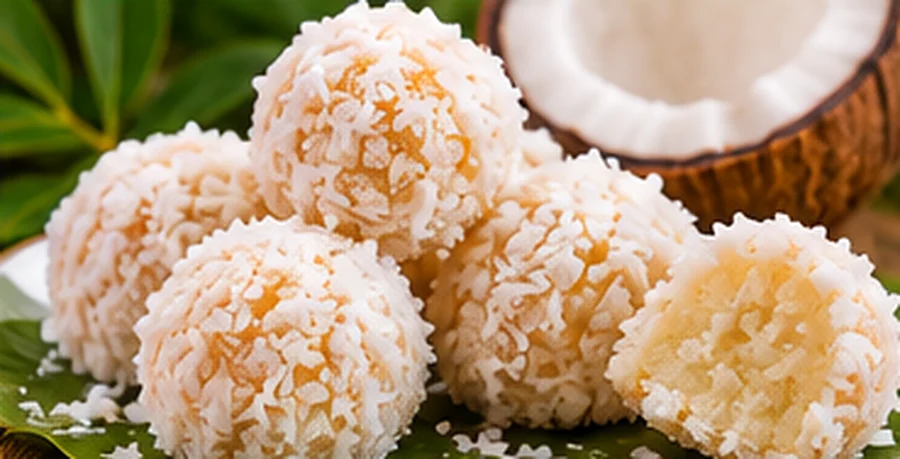
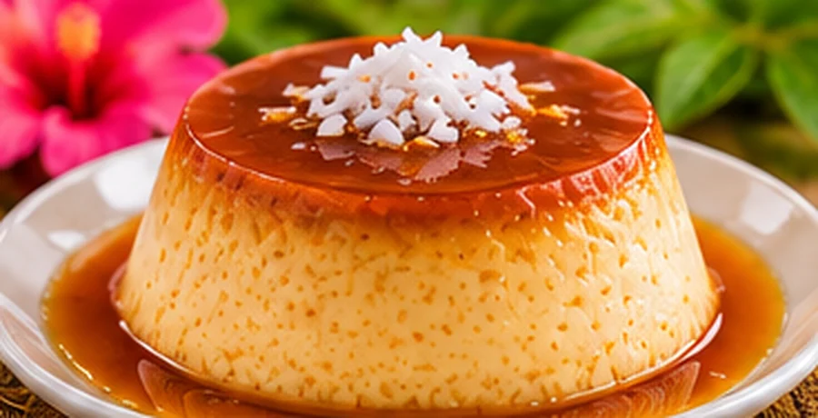
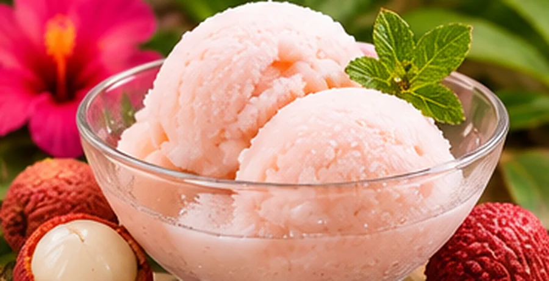

Recettes salées
Première partie
Carri poulet, rougail saucisses, civet zourites, massalé cabri, samoussas, bouchons… La cuisine réunionnaise est née de la rencontre des cuisines française, malgache, africaine, indienne et chinoise. Le repas créole se compose presque toujours de trois éléments : le riz, les grains (lentilles, haricots, pois) et le carri ou le rougail, accompagnés d'un rougail cru bien pimenté.
16 recettes
Carri poulet

🧺Les ingrédients
- 1,5 kgde poulet en morceaux
- 3tomates
- 2oignons
- 4gousses d'ail
- 1 morceaude gingembre
- 1 c. à caféde curcuma (« safran pays »)
- thym, huile, sel, poivre, piment
- 500 gde riz blanc
- des grains (lentilles ou haricots) et un rougail tomate
👩🍳La préparation
- Piler : Pilez l'ail, le gingembre et le sel au pilon.
- Dorer : Faites dorer le poulet dans l'huile chaude, dans une grande marmite.
- Épicer : Ajoutez les oignons, puis le mélange pilé et le curcuma ; remuez pour que tout prenne la couleur.
- Mijoter : Ajoutez les tomates et le thym, couvrez et laissez cuire 40 minutes à feu doux, en ajoutant un peu d'eau si besoin.
- Servir : Servez avec le riz, les grains et le rougail, comme le veut la tradition.
🥤Les boissons d'accompagnement
Vin rouge léger
Un rouge fruité, peu tannique · pour les adultes
Bière blonde locale
Une bière légère et désaltérante · pour les adultes
Jus de tamarin
Pulpe de tamarin, eau et sucre, acidulé, sans alcool
Rougail saucisses

🧺Les ingrédients
- 1 kgde saucisses fumées
- 5tomates bien mûres
- 3oignons
- 4gousses d'ail
- 1 morceaude gingembre
- thym, curcuma, huile, piment, sel
👩🍳La préparation
- Blanchir : Piquez les saucisses et faites-les bouillir 10 minutes pour retirer l'excès de sel et de gras.
- Dorer : Coupez-les en rondelles et faites-les dorer dans un peu d'huile.
- Les oignons : Ajoutez les oignons émincés, l'ail et le gingembre pilés, le curcuma.
- Les tomates : Ajoutez les tomates coupées et le thym ; laissez compoter 25 minutes à couvert.
- Servir : Servez avec du riz blanc et des grains.
🥤Les boissons d'accompagnement
Vin rouge léger
Un rouge fruité, peu tannique · pour les adultes
Bière blonde locale
Une bière légère et désaltérante · pour les adultes
Citronnade
Citron, eau et sucre de canne, sans alcool
Rougail morue

🧺Les ingrédients
- 600 gde morue salée
- 4tomates
- 3oignons
- 3gousses d'ail
- gingembre, thym, persil, huile, piment
👩🍳La préparation
- Dessaler : La veille, faites tremper la morue dans de l'eau froide, en changeant l'eau plusieurs fois.
- Effeuiller : Pochez-la 5 minutes, puis effeuillez-la en retirant arêtes et peau.
- Faire revenir : Faites dorer la morue dans l'huile avec les oignons.
- Cuire : Ajoutez l'ail, le gingembre, les tomates et le thym ; laissez cuire 20 minutes.
- Servir : Parsemez de persil et servez avec du riz et des grains.
🥤Les boissons d'accompagnement
Vin blanc sec
Un blanc vif, qui supporte les épices · pour les adultes
Vin rosé
Un rosé sec et fruité · pour les adultes
Citronnade
Citron, eau et sucre de canne, sans alcool
Civet zourites

🧺Les ingrédients
- 1,5 kgde poulpe nettoyé
- 3oignons
- 3tomates
- 4gousses d'ail
- 25 clde vin rouge
- gingembre, thym, clou de girofle, huile, sel, poivre
👩🍳La préparation
- Attendrir : Faites blanchir le poulpe 10 minutes dans l'eau bouillante, puis coupez-le en morceaux.
- Faire revenir : Faites dorer les morceaux dans l'huile avec les oignons.
- Épicer : Ajoutez l'ail et le gingembre pilés, les tomates, le thym et le girofle.
- Mijoter : Mouillez avec le vin rouge et laissez mijoter 1 heure à 1 h 30, jusqu'à ce que le poulpe soit tendre.
- Servir : Servez avec du riz et un rougail.
🥤Les boissons d'accompagnement
Vin rouge léger
Un rouge fruité, peu tannique · pour les adultes
Vin de Cilaos
Vin produit dans le cirque de Cilaos, l'un des rares vignobles tropicaux de France · pour les adultes
Jus de tamarin
Pulpe de tamarin, eau et sucre, acidulé, sans alcool
Carri camarons

🧺Les ingrédients
- 1 kgde camarons (ou de grosses crevettes)
- 3tomates
- 2oignons
- 3gousses d'ail
- gingembre, curcuma, thym, persil, huile, piment
👩🍳La préparation
- Préparer : Rincez les camarons ; gardez-les entiers ou décortiquez les queues.
- Saisir : Faites-les saisir 3 minutes dans l'huile chaude, puis réservez-les.
- La sauce : Faites revenir les oignons, l'ail et le gingembre pilés, le curcuma, puis les tomates.
- Cuire : Remettez les camarons et laissez mijoter 10 minutes, pas plus, pour qu'ils restent tendres.
- Servir : Parsemez de persil et servez avec du riz.
🥤Les boissons d'accompagnement
Vin blanc sec
Un blanc vif, qui supporte les épices · pour les adultes
Vin de Cilaos
Vin produit dans le cirque de Cilaos, l'un des rares vignobles tropicaux de France · pour les adultes
Citronnade
Citron, eau et sucre de canne, sans alcool
Massalé cabri

🧺Les ingrédients
- 2 kgde cabri (chèvre) en morceaux
- 3 c. à soupede massalé
- 4oignons
- 6gousses d'ail
- 1 morceaude gingembre
- 3tomates
- feuilles de caloupilé (kaloupilé), thym, huile, sel
👩🍳La préparation
- Mariner : Frottez la viande avec l'ail, le gingembre pilés et une partie du massalé ; laissez reposer 2 heures.
- Dorer : Faites revenir la viande dans l'huile avec les oignons.
- Épicer : Ajoutez le reste du massalé et les feuilles de caloupilé, remuez quelques minutes.
- Mijoter : Ajoutez les tomates et un peu d'eau ; laissez mijoter 1 h 30 à 2 heures à couvert.
- Servir : Servez avec du riz et un rougail de pommes d'amour (tomates).
🥤Les boissons d'accompagnement
Vin rouge léger
Un rouge fruité, peu tannique · pour les adultes
Bière blonde locale
Une bière légère et désaltérante · pour les adultes
Jus de tamarin
Pulpe de tamarin, eau et sucre, acidulé, sans alcool
Ti jacques boucané

🧺Les ingrédients
- 1jeune jaque (ti jacques) d'environ 2 kg
- 500 gde boucané (poitrine de porc fumée)
- 2oignons
- 4gousses d'ail
- 2tomates
- gingembre, curcuma, thym, huile, sel
👩🍳La préparation
- Éplucher : Huilez-vous les mains et le couteau (le fruit colle) ; épluchez le ti jacques et coupez la chair en morceaux.
- Pré-cuire : Faites bouillir les morceaux 20 minutes, puis égouttez.
- Le boucané : Dessalez le boucané à l'eau bouillante, coupez-le et faites-le dorer.
- Mijoter : Ajoutez oignons, ail, gingembre, curcuma, tomates, puis le ti jacques ; laissez cuire 30 minutes.
- Servir : Servez avec du riz et des grains.
🥤Les boissons d'accompagnement
Vin rouge léger
Un rouge fruité, peu tannique · pour les adultes
Bière blonde locale
Une bière légère et désaltérante · pour les adultes
Tisane de citronnelle
La « tisane » des Hauts, sans alcool
Lentilles de Cilaos

🧺Les ingrédients
- 400 gde lentilles de Cilaos
- 1oignon
- 2gousses d'ail
- 1tomate
- thym, une feuille de combava (facultatif), huile, sel
👩🍳La préparation
- Rincer : Rincez les lentilles.
- Faire revenir : Faites revenir l'oignon, l'ail et la tomate dans un peu d'huile.
- Cuire : Ajoutez les lentilles, le thym, et couvrez largement d'eau.
- Mijoter : Laissez cuire 40 minutes à feu doux : elles doivent être fondantes, avec un peu de sauce.
- Servir : Servez à côté du riz et du carri.
🥤Les boissons d'accompagnement
Vin de Cilaos
Vin produit dans le cirque de Cilaos, l'un des rares vignobles tropicaux de France · pour les adultes
Vin rouge léger
Un rouge fruité, peu tannique · pour les adultes
Tisane de citronnelle
La « tisane » des Hauts, sans alcool
Samoussas

🧺Les ingrédients
- 1 paquetde feuilles de brick ou de pâte à samoussas
- 2 c. à soupede farine délayée dans l'eau (la « colle »)
- 400 gde bœuf haché
- 2pommes de terre cuites en dés
- 1oignon
- ail, gingembre, cumin, curcuma, coriandre, sel
- huile pour la friture
👩🍳La préparation
- La farce : Faites revenir l'oignon, la viande et les épices, puis ajoutez les pommes de terre ; laissez refroidir.
- Découper : Coupez les feuilles en bandes d'environ 6 cm de large.
- Plier : Déposez une cuillerée de farce et pliez la bande en triangles successifs, comme un drapeau.
- Coller : Fermez avec un peu de colle de farine.
- Frire : Un adulte fait frire les samoussas dans l'huile chaude jusqu'à ce qu'ils soient dorés.
🥤Les boissons d'accompagnement
Bière blonde locale
Une bière légère et désaltérante · pour les adultes
Jus de letchis
Le jus du letchi, fruit de Noël à La Réunion, sans alcool
Citronnade
Citron, eau et sucre de canne, sans alcool
Bouchons

🧺Les ingrédients
- 500 gde porc haché
- 1paquet de feuilles de raviolis chinois
- 2oignons verts (cives)
- 2gousses d'ail
- 1 morceaude gingembre
- sauce soja, un peu de maïzena, sel, poivre
👩🍳La préparation
- La farce : Mélangez la viande, les cives hachées, l'ail, le gingembre, la sauce soja et la maïzena.
- Garnir : Posez une boulette de farce au centre de chaque feuille.
- Former : Remontez la pâte autour de la farce en laissant le dessus ouvert : le bouchon a la forme d'un petit pot.
- Cuire : Faites cuire 15 à 20 minutes à la vapeur.
- Servir : Servez chaud, avec de la sauce soja et du piment.
🥤Les boissons d'accompagnement
Bière blonde locale
Une bière légère et désaltérante · pour les adultes
Thé à la vanille
Thé noir parfumé à la gousse de vanille
Citronnade
Citron, eau et sucre de canne, sans alcool
Bonbons piment

🧺Les ingrédients
- 300 gde pois du Cap ou de lentilles corail (ou pois cassés)
- 1oignon
- 2cives
- piment, cumin, curcuma, coriandre, sel
- huile pour la friture
👩🍳La préparation
- Tremper : Faites tremper les pois une nuit dans l'eau froide.
- Mixer : Égouttez-les et mixez-les en pâte épaisse avec l'oignon, les cives et les épices.
- Former : Formez de petites boulettes aplaties, avec un trou au centre si vous voulez.
- Frire : Un adulte les fait frire dans l'huile chaude jusqu'à ce qu'elles soient dorées.
- Servir : Servez chaud, à l'apéritif ou glissés dans un pain.
🥤Les boissons d'accompagnement
Bière blonde locale
Une bière légère et désaltérante · pour les adultes
Jus de letchis
Le jus du letchi, fruit de Noël à La Réunion, sans alcool
Jus de tamarin
Pulpe de tamarin, eau et sucre, acidulé, sans alcool
Achards de légumes

🧺Les ingrédients
- 2carottes
- 200 gde chou blanc
- 150 gde haricots verts
- 1oignon
- 3gousses d'ail
- gingembre, curcuma, vinaigre, huile, piment, sel
👩🍳La préparation
- Tailler : Coupez les légumes en fins bâtonnets.
- Blanchir : Plongez-les 1 minute dans l'eau bouillante, puis égouttez et séchez-les bien.
- Épicer : Faites chauffer l'huile avec l'ail, le gingembre et le curcuma, sans les brûler.
- Mélanger : Versez sur les légumes, ajoutez un trait de vinaigre, le sel et le piment.
- Reposer : Laissez reposer quelques heures avant de servir, en accompagnement.
🥤Les boissons d'accompagnement
Vin blanc sec
Un blanc vif, qui supporte les épices · pour les adultes
Citronnade
Citron, eau et sucre de canne, sans alcool
Tisane de citronnelle
La « tisane » des Hauts, sans alcool
Rougail tomate

🧺Les ingrédients
- 3tomates bien fermes
- 1oignon
- 1morceau de gingembre
- 1citron vert
- piment, sel, un filet d'huile
👩🍳La préparation
- Couper : Coupez les tomates et l'oignon en tout petits dés.
- Piler : Pilez le gingembre, le piment et le sel.
- Mélanger : Mélangez le tout avec le jus de citron et l'huile.
- Reposer : Laissez reposer 10 minutes au frais.
- Servir : Servez en petite quantité à côté du carri : il est fort !
🥤Les boissons d'accompagnement
Jus de tamarin
Pulpe de tamarin, eau et sucre, acidulé, sans alcool
Citronnade
Citron, eau et sucre de canne, sans alcool
Bière blonde locale
Une bière légère et désaltérante · pour les adultes
Gratin de chouchou

🧺Les ingrédients
- 4chouchous (christophines)
- 50 gde beurre
- 50 gde farine
- 50 clde lait
- 100 gde fromage râpé
- muscade, sel, poivre
👩🍳La préparation
- Éplucher : Épluchez les chouchous sous l'eau (ils collent), retirez le cœur et coupez-les en morceaux.
- Cuire : Faites-les cuire 15 minutes à l'eau salée et égouttez-les bien.
- La béchamel : Faites fondre le beurre, ajoutez la farine puis le lait en remuant jusqu'à épaississement.
- Gratiner : Mélangez chouchous et béchamel dans un plat, couvrez de fromage.
- Cuire : Faites gratiner 25 minutes à 200 °C.
🥤Les boissons d'accompagnement
Vin de Cilaos
Vin produit dans le cirque de Cilaos, l'un des rares vignobles tropicaux de France · pour les adultes
Vin blanc sec
Un blanc vif, qui supporte les épices · pour les adultes
Tisane de citronnelle
La « tisane » des Hauts, sans alcool
Riz cantonais

🧺Les ingrédients
- 600 gde riz cuit et refroidi
- 3œufs
- 150 gde jambon ou de lap chong (saucisse chinoise)
- 100 gde petits pois
- 3cives
- sauce soja, huile, sel
👩🍳La préparation
- L'omelette : Battez les œufs et faites une omelette fine ; coupez-la en lanières.
- Sauter : Faites sauter le jambon et les petits pois dans un wok bien chaud.
- Le riz : Ajoutez le riz et faites-le sauter en remuant sans cesse.
- Assaisonner : Ajoutez la sauce soja, l'omelette et les cives émincées.
- Servir : Servez aussitôt, bien chaud.
🥤Les boissons d'accompagnement
Thé à la vanille
Thé noir parfumé à la gousse de vanille
Bière blonde locale
Une bière légère et désaltérante · pour les adultes
Jus de letchis
Le jus du letchi, fruit de Noël à La Réunion, sans alcool
Pâté créole

🧺Les ingrédients
- 500 gde porc
- 500 gde poulet
- ail, oignon, gingembre, thym, quatre-épices, un peu de rhum, sel, poivre
- 500 gde farine
- 250 gde beurre
- 2œufs + 1 jaune pour dorer
- un peu d'eau, sel
👩🍳La préparation
- Mariner : La veille, coupez les viandes en dés et faites-les mariner avec les épices.
- La pâte : Travaillez farine, beurre, œufs et eau en une pâte souple ; laissez reposer.
- Monter : Foncez un moule avec les deux tiers de la pâte, remplissez de farce, couvrez du reste.
- Décorer : Faites une cheminée au centre, décorez et dorez au jaune d'œuf.
- Cuire : Faites cuire 1 h 30 à 180 °C ; servez tiède ou froid.
🥤Les boissons d'accompagnement
Vin rouge léger
Un rouge fruité, peu tannique · pour les adultes
Vin de Cilaos
Vin produit dans le cirque de Cilaos, l'un des rares vignobles tropicaux de France · pour les adultes
Jus de letchis
Le jus du letchi, fruit de Noël à La Réunion, sans alcool
Recettes sucrées
Deuxième partie
Gâteau patate, gâteau manioc, bonbons miel, macatias, confiture de goyavier… Les douceurs réunionnaises font la part belle aux racines (patate douce, manioc, arrow-root), à la coco, aux fruits de l'île et à la vanille Bourbon, l'une des plus réputées du monde.
14 recettes
Gâteau patate

🧺Les ingrédients
- 1 kgde patates douces
- 150 gde sucre
- 3œufs
- 50 gde beurre
- 20 clde lait (ou de lait de coco)
- 1 gousse de vanille, cannelle, muscade, un peu de rhum (facultatif)
👩🍳La préparation
- Cuire : Faites cuire les patates douces à l'eau, épluchez-les et écrasez-les en purée.
- Mélanger : Ajoutez le sucre, le beurre, les œufs un à un, le lait et les épices.
- Vanille : Grattez la gousse de vanille et ajoutez les graines.
- Cuire : Versez dans un moule beurré et faites cuire 1 heure à 180 °C.
- Servir : Laissez refroidir avant de démouler et de couper en parts.
🥤Les boissons d'accompagnement
Café Bourbon
Un café chaud, à la fin du repas
Thé à la vanille
Thé noir parfumé à la gousse de vanille
Lait de coco frais
Boisson douce et rafraîchissante, sans alcool
Gâteau manioc

🧺Les ingrédients
- 1 kgde manioc frais (ou surgelé râpé)
- 200 gde sucre
- 3œufs
- 40 clde lait de coco
- 50 gde beurre fondu
- vanille, zeste de citron vert, une pincée de sel
👩🍳La préparation
- Râper : Épluchez le manioc et râpez-le finement ; pressez-le dans un torchon pour enlever le jus.
- Mélanger : Ajoutez le sucre, les œufs, le lait de coco, le beurre et les parfums.
- Mouler : Versez dans un moule beurré.
- Cuire : Faites cuire environ 1 heure à 180 °C, jusqu'à ce que le dessus soit bien doré.
- Servir : Servez froid, coupé en carrés.
🥤Les boissons d'accompagnement
Café Bourbon
Un café chaud, à la fin du repas
Lait de coco frais
Boisson douce et rafraîchissante, sans alcool
Jus d'ananas Victoria
L'ananas de La Réunion, petit et très parfumé, sans alcool
Bonbons miel

🧺Les ingrédients
- 250 gde farine
- 1œuf
- 10 clde lait de coco
- une pincée de sel, huile pour la friture
- 250 gde sucre
- 15 cld'eau
- un peu de miel, cardamome ou vanille
👩🍳La préparation
- La pâte : Mélangez farine, œuf, lait de coco et sel en une pâte ferme ; laissez reposer.
- Former : Étalez la pâte, découpez des bandes et formez de petites fleurs ou des torsades.
- Frire : Un adulte les fait frire dans l'huile chaude jusqu'à ce qu'elles soient dorées.
- Le sirop : Faites chauffer sucre, eau, miel et parfum jusqu'à obtenir un sirop épais.
- Tremper : Plongez les beignets dans le sirop tiède, puis laissez-les sécher.
🥤Les boissons d'accompagnement
Thé à la vanille
Thé noir parfumé à la gousse de vanille
Café Bourbon
Un café chaud, à la fin du repas
Lait de coco frais
Boisson douce et rafraîchissante, sans alcool
Macatias

🧺Les ingrédients
- 500 gde farine
- 80 gde sucre
- 1 sachetde levure de boulanger
- 25 clde lait tiède
- 50 gde beurre mou
- 1œuf
- une pincée de sel, vanille
👩🍳La préparation
- Pétrir : Mélangez farine, sucre, levure, sel, puis le lait, l'œuf et le beurre ; pétrissez 10 minutes.
- Lever : Laissez lever la pâte 1 heure dans un endroit chaud.
- Façonner : Formez des boules de la taille d'une mandarine et posez-les sur la plaque.
- Lever encore : Laissez-les gonfler encore 1 heure.
- Cuire : Faites cuire 20 minutes à 180 °C : ils doivent être dorés et moelleux.
🥤Les boissons d'accompagnement
Café Bourbon
Un café chaud, à la fin du repas
Thé à la vanille
Thé noir parfumé à la gousse de vanille
Lait de coco frais
Boisson douce et rafraîchissante, sans alcool
Bonbons coco

🧺Les ingrédients
- 300 gde coco fraîche râpée
- 250 gde sucre (blanc ou roux)
- 10 cld'eau
- vanille, cannelle, colorant rose (facultatif)
👩🍳La préparation
- Le sirop : Faites chauffer le sucre et l'eau avec la vanille.
- La coco : Ajoutez la coco et remuez sans cesse à feu doux.
- Cuire : Laissez cuire jusqu'à ce que le mélange se détache de la casserole.
- Former : Formez de petits tas à la cuillère sur un papier huilé.
- Sécher : Laissez durcir et sécher avant de les décoller.
🥤Les boissons d'accompagnement
Café Bourbon
Un café chaud, à la fin du repas
Thé à la vanille
Thé noir parfumé à la gousse de vanille
Jus d'ananas Victoria
L'ananas de La Réunion, petit et très parfumé, sans alcool
Flan coco

🧺Les ingrédients
- 40 clde lait de coco
- 1 boîtede lait concentré sucré
- 25 clde lait
- 4œufs
- 100 gde coco râpée
- sucre pour le caramel, vanille
👩🍳La préparation
- Caramel : Faites un caramel blond et versez-le au fond d'un moule.
- Mélanger : Battez les œufs avec les laits et la vanille, ajoutez la coco.
- Cuire : Versez dans le moule et faites cuire 50 minutes au bain-marie à 180 °C.
- Refroidir : Laissez refroidir, puis une nuit au réfrigérateur.
- Démouler : Démoulez sur un plat creux pour garder le caramel.
🥤Les boissons d'accompagnement
Café Bourbon
Un café chaud, à la fin du repas
Lait de coco frais
Boisson douce et rafraîchissante, sans alcool
Thé à la vanille
Thé noir parfumé à la gousse de vanille
Gâteau banane

🧺Les ingrédients
- 4bananes très mûres
- 150 gde sucre roux
- 2œufs
- 250 gde farine
- 100 gde beurre fondu
- levure, vanille, cannelle
👩🍳La préparation
- Écraser : Écrasez les bananes à la fourchette.
- Mélanger : Ajoutez le sucre, les œufs, le beurre fondu et les parfums.
- Lier : Incorporez la farine et la levure.
- Cuire : Faites cuire 45 minutes à 180 °C dans un moule à cake.
- Servir : Servez tiède ou froid.
🥤Les boissons d'accompagnement
Café Bourbon
Un café chaud, à la fin du repas
Lait de coco frais
Boisson douce et rafraîchissante, sans alcool
Jus de letchis
Le jus du letchi, fruit de Noël à La Réunion, sans alcool
Confiture de goyavier

🧺Les ingrédients
- 1 kgde goyaviers bien rouges
- 700 gde sucre
- 1citron vert
- 1 bâton de cannelle (facultatif)
👩🍳La préparation
- Laver : Lavez les goyaviers et retirez la petite fleur sèche.
- Cuire : Faites-les cuire 15 minutes avec un peu d'eau.
- Passer : Passez-les au moulin à légumes pour retirer les petits grains durs.
- Confire : Ajoutez le sucre et le jus de citron ; faites cuire 30 minutes en remuant.
- Mettre en pots : Versez dans des pots ébouillantés et fermez aussitôt.
🥤Les boissons d'accompagnement
Thé à la vanille
Thé noir parfumé à la gousse de vanille
Café Bourbon
Un café chaud, à la fin du repas
Jus de goyavier
Le petit fruit rouge des Hauts, sans alcool
Ananas rôti à la vanille

🧺Les ingrédients
- 2ananas Victoria
- 2gousses de vanille
- 60 gde sucre roux
- 40 gde beurre
- un trait de rhum (facultatif), citron vert
👩🍳La préparation
- Peler : Pelez les ananas et coupez-les en quartiers, en retirant le cœur.
- La vanille : Fendez les gousses et grattez les graines.
- Caraméliser : Faites fondre beurre et sucre avec la vanille, ajoutez les ananas.
- Rôtir : Laissez-les dorer 20 minutes à feu doux en les arrosant du caramel.
- Servir : Servez chaud avec un filet de citron vert, et une boule de glace si vous voulez.
🥤Les boissons d'accompagnement
Jus d'ananas Victoria
L'ananas de La Réunion, petit et très parfumé, sans alcool
Café Bourbon
Un café chaud, à la fin du repas
Rhum arrangé
Rhum agricole où ont macéré fruits, vanille ou épices · pour les adultes
Crème vanille

🧺Les ingrédients
- 50 clde lait
- 20 clde crème
- 5jaunes d'œufs
- 100 gde sucre
- 1gousse de vanille de La Réunion
👩🍳La préparation
- Infuser : Fendez la gousse, grattez les graines et faites chauffer le lait avec la gousse ; laissez infuser 15 minutes.
- Blanchir : Fouettez les jaunes avec le sucre jusqu'à ce qu'ils blanchissent.
- Cuire : Versez le lait chaud sur les œufs, remettez sur feu doux et remuez jusqu'à ce que la crème nappe la cuillère.
- Ajouter : Ajoutez la crème, mélangez.
- Refroidir : Versez dans des ramequins et laissez refroidir au frais.
🥤Les boissons d'accompagnement
Thé à la vanille
Thé noir parfumé à la gousse de vanille
Café Bourbon
Un café chaud, à la fin du repas
Lait de coco frais
Boisson douce et rafraîchissante, sans alcool
Beignets banane

🧺Les ingrédients
- 4bananes mûres
- 150 gde farine
- 1œuf
- 15 clde lait
- 30 gde sucre
- levure, vanille, sucre glace, huile pour la friture
👩🍳La préparation
- La pâte : Mélangez farine, levure, sucre, œuf et lait pour une pâte épaisse.
- Les bananes : Écrasez-les grossièrement et ajoutez-les à la pâte.
- Frire : Un adulte dépose des cuillerées de pâte dans l'huile chaude.
- Dorer : Retournez-les pour qu'ils dorent des deux côtés, puis égouttez-les.
- Servir : Saupoudrez de sucre glace et servez tiède.
🥤Les boissons d'accompagnement
Café Bourbon
Un café chaud, à la fin du repas
Lait de coco frais
Boisson douce et rafraîchissante, sans alcool
Jus d'ananas Victoria
L'ananas de La Réunion, petit et très parfumé, sans alcool
Gâteau ti son

🧺Les ingrédients
- 250 gde son de blé
- 150 gde farine
- 150 gde sucre roux
- 2œufs
- 40 clde lait
- 80 gde beurre fondu
- levure, vanille, cannelle, muscade
👩🍳La préparation
- Tremper : Faites tremper le son dans le lait 15 minutes.
- Mélanger : Ajoutez les œufs, le sucre, le beurre et les épices.
- Lier : Incorporez la farine et la levure.
- Cuire : Faites cuire 50 minutes à 180 °C.
- Servir : Servez froid, avec un café ou une tisane.
🥤Les boissons d'accompagnement
Café Bourbon
Un café chaud, à la fin du repas
Tisane de citronnelle
La « tisane » des Hauts, sans alcool
Lait de coco frais
Boisson douce et rafraîchissante, sans alcool
Sorbet letchis

🧺Les ingrédients
- 1 kgde letchis
- 150 gde sucre
- 15 cld'eau
- 1citron vert
👩🍳La préparation
- Décortiquer : Épluchez les letchis et retirez les noyaux.
- Le sirop : Faites bouillir l'eau et le sucre 2 minutes, laissez refroidir.
- Mixer : Mixez la chair des letchis avec le sirop et le jus de citron.
- Glacer : Mettez en sorbetière, ou au congélateur en remuant toutes les 30 minutes.
- Servir : Servez en boules, décoré de quelques letchis frais.
🥤Les boissons d'accompagnement
Jus de letchis
Le jus du letchi, fruit de Noël à La Réunion, sans alcool
Punch coco
Rhum, lait de coco et sucre · pour les adultes
Thé à la vanille
Thé noir parfumé à la gousse de vanille
Bonbons la rouroute

🧺Les ingrédients
- 250 gde farine de rouroute (arrow-root)
- 100 gde farine de blé
- 150 gde sucre
- 125 gde beurre mou
- 1œuf
- vanille, une pincée de sel
👩🍳La préparation
- Mélanger : Travaillez le beurre et le sucre, puis l'œuf et la vanille.
- Les farines : Ajoutez les deux farines et le sel, mélangez sans trop travailler.
- Former : Formez de petites boules aplaties ou utilisez un moule à biscuits.
- Cuire : Faites cuire 12 à 15 minutes à 170 °C : ils doivent rester pâles.
- Refroidir : Laissez refroidir : ils fondent dans la bouche.
🥤Les boissons d'accompagnement
Thé à la vanille
Thé noir parfumé à la gousse de vanille
Café Bourbon
Un café chaud, à la fin du repas
Tisane de citronnelle
La « tisane » des Hauts, sans alcool